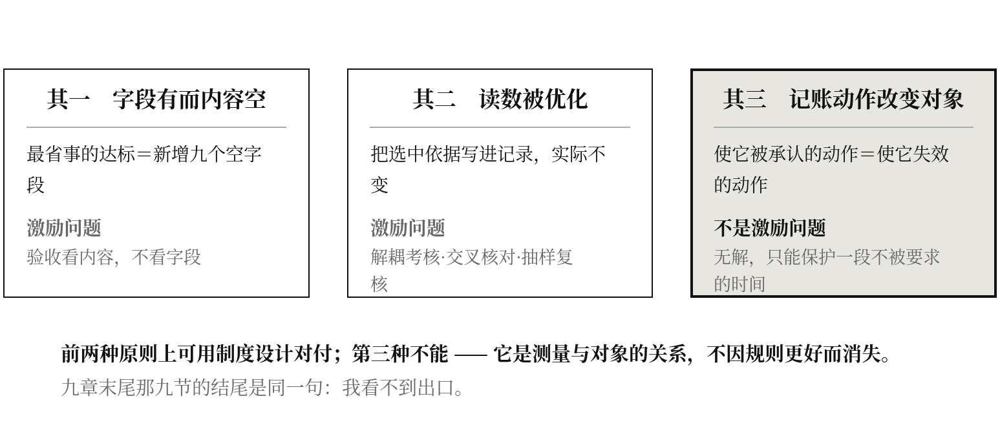

论九章末尾那同一句“我看不到出口”，以及本书自己最可能的结局
提要
九章各有一节写这个读数被采纳之后会被怎样毁掉，九节的结尾是同一句话。本章把九处合起来处理，指出反噬有三种形状，其中前两种是激励问题、原则上可用制度设计对付，第三种不是——它是测量与对象之间的关系，无法靠更好的规则化解。本章给出本书能提出的三条对策，并逐条说明它们为什么不彻底。第四节把九章的伦理条款合成五条硬约束。第五节写本书自己最可能的结局：“立账”成为一个新的合规项目，九栏被写进标准，然后被填成空的。 本书对此没有对策，只有一条底线。
一、九节同一句话
第一章第十六节、第二章第十六节、第三章第十六节……直到第九章第十九节，九章各有一节专写这件事：当这个读数被写进考核，最省事的达标方式是什么，以及那个达标方式会怎样毁掉它本来要保护的东西。
九节各自的内容不同，结尾是同一句：我看不到出口。
这不是九次谦虚，是九次同样的失败。九章的作者在九个不同的位置上试图找到一个“既能被清点、又不会被优化掉”的读数，九次都没找到。本章的任务是把这九次失败合起来看，看它们是不是同一次失败。
答案是：不完全是。有三种形状，性质不同。
二、三种反噬
第一种 · 字段有而内容空。 最省事的达标方式是新增一个字段，而不是改变填字段所需的那套流程。第十二章第五节已写：九栏俱在而九栏俱空，是这份问卷最可能的结局。
这一种是激励问题，原则上可以对付：把验收口径写在字段的内容上而不是字段的存在上——最近一年该字段的实际填写率、内容的可核查性、内容与其他记录的一致性。这一条不彻底，但方向是对的。
第二种 · 读数成为目标之后被优化。 落点自证率被写进考核，机构就会把“依据个体实测选中”这件事写进记录，而实际的选中依据不变；续养率被写进考核，机构就会把维持性工作重新归类为识别性工作；漏汰率被写进考核，机构就会挑一个宽松的外部参照。
这一种也是激励问题，对付它有一套现成的办法：读数与考核解耦、多来源交叉核对、抽样复核、编码规则外部化。这些办法都不彻底，但它们是已知的技术，成本可以估算。
第三种 · 记账这个动作本身改变了被记的那样东西。 这一种与前两种性质不同。
第四章第十五节已经把它讲明了：使那些未进入记录的维持动作被承认的唯一手段是把它们记下来，而记下来就把它们变成了另一样东西——一件被要求、被计次、被验收的工作。使它被承认的动作与使它失效的动作是同一个动作。 这里没有作弊，没有偷懒，没有激励扭曲；哪怕所有人都诚实、尽责、按规则办事，结果一样。
第八章第十九节给出了同一形状的另一例：落点自证率一旦成为验收指标，最省事的实现是把“依据个体实测”这件事标准化——而标准化的第一步是规定用哪些实测指标、按什么阈值判定偏移，于是它重新变成一份人群规则，落点重新来自类别。做得越规范，离它的定义越远。
第三种反噬不是激励问题，是测量与对象的关系问题。它无法靠更好的规则化解，因为规则本身就是那个动作。

三、本书能提出的三条对策，以及它们为什么不彻底
对策一：验收看内容，不看字段。
对第一种反噬有效。不彻底之处：内容的可核查性本身需要一套核查制度，而那套制度会成为新的被优化对象。本书能给的边界是——核查应当抽样、事后、由不承担该机构绩效的一方进行，且核查记录不进入被核查方的考核。这一条在现有的质控体系里几乎从不成立。
对策二：九个读数用于诊断，不用于考核。
这是本书的正式主张，而且要写得没有回旋余地：
任何把九个读数写入个人、科室、机构绩效的做法，都不是本书的主张。 它们是用来回答“这套记录制度看不见什么”的，不是用来回答“谁做得好”的。
不彻底之处必须承认：一个可以被清点的数，几乎必然会被拿去考核。 本书作者没有能力阻止这件事，作者的声明在制度面前不具备任何约束力。写下这一条的全部作用，是让此后的误用无法自称是本书的主张。
对策三：保留一处不被记账的场所。
这是唯一一条针对第三种反噬的对策，也是最不成立的一条。它的内容是：在制度上明确划出一段时间或一类活动，不做记录、不做考核、不作为验收依据——让那些一旦被记录就会失效的东西，有地方继续发生。
不彻底之处是致命的：要证明这个场所有用，就得测量它；而测量它就取消了它。 于是这条对策永远无法被验证，也就永远无法说服任何一个需要理由才肯划出资源的机构。本书把这条矛盾原样交出，不假装它有解。
四、五条伦理硬约束
九章各自的伦理条款合并，去重之后是五条。它们不是建议，是使用本书的前提；不接受其中任何一条，就不要使用本书的读数。
其一，指位置与时段，不指人。 九个读数全部是对一次判定、一段记录、一套制度的读数。九章反复论证过：在那些格里，每一个在场者的每一个动作都是准确的、合规的、尽职的。把任何一个读数用于评价具体的医生、护士、教师、检验员、维修工、管理者，都直接违反本书的全部论证。
其二，不得据以追溯问责历史判定。 第二章的判定线在动、第六章的参照在漂、第三章的余量被重复计入——这三件事都意味着历史上的判定是在当时的账本结构下作出的。用今天的九栏去追究过去的判定，等于用一把新尺子去重判旧的量。 本书的读数只能用于改变今后的记录结构。
其三，不得采集未被告知的第三方劳动数据。 代持率与他持率的分子涉及大量由家属、同事、志愿者承担而未进入记录的动作。这些人不是被服务对象，也不是机构的雇员，他们没有同意被计量。 采集必须经过告知与同意；不能取得同意时，读数应当留空，不得以估算填补。第四章末「伦理与证据边界」一节已写：一个把家属劳动逐项计次的系统，会首先伤害那些劳动最多的人。
其四，安全关键系统的高续养率是正确的代价，不是病。 第九章第十六节其二已把这条写明：民航、核电、轨道交通、血液制品，这些行当的措施只增不减是一项被反复验证的正确选择。在这些行当里把续养率当作待压缩的成本，是本书能造成的最直接的危害。 本书在这些场所的适用范围仅限于“续养率上升而实际风险未同步下降”的那一类，而这一类事前极难判定。
其五，据以作出任何不利安排，必须公开编码规则并给复核通道。 包括：编码规则的全文、编码者的资质与培训、两组独立编码的一致性数据、当事方申请复核的途径。第十二章第四节已写明：本书没有做过编码者一致性检验。 在这项检验完成之前，第五条实际上等于禁止一切不利安排。
五、本书自己最可能的结局
一本主张“某样东西应当有一栏账”的书，最可能的结局不是被反驳，是被采纳——以最省事的那种方式。
具体的形状可以预言得相当准确：某个标准修订小组读到本书或它的二手转述，认为九栏是个好主意，于是在下一版的记录规范里增加若干推荐字段；信息系统厂商在下一个版本里加上这些字段；机构在评审前把字段填上；评审看的是字段有没有；三年后，九栏俱在，读数俱不可算——因为字段里填的是“有”“无”“见附件”“按规定执行”。
这个结局比“本书被忽视”更坏，因为它会用尽这个题目的机会：九栏一旦被写进标准并被证明“没用”，此后十年内不会再有人重新提出它。
本书没有对策。能给的只有一条底线，写在这里，也写在附录五的验收口径里：
验收看事后清点出来的实际读数，不看有没有设立制度。 一个机构报告“我们已建立九栏”不构成任何证据；构成证据的是它交出最近一年这九个读数的实际数值，连同计算这些数值所依据的原始记录条目数。若它交不出数值，那九栏就等于不存在。
六、这一章自己落在哪一格
本章列举了三种反噬，给了三条不彻底的对策，写了五条伦理硬约束，然后预言本书自己会被怎样用坏。
按第九章的语言：本章是一次典型的功债生产。本书指出了一个问题，提出了九个读数，而这九个读数一旦进入任何制度，就需要被一直供养——需要编码规则、编码者培训、一致性复核、抽样核查、复核通道，而这些全部是永久性的、没有到期日的负荷。本书自己是一笔功债。
第九章第九节问过：上一次为这类问题加上的那一样东西，是什么时候、由谁、按什么条件撤掉的？
对本书，这个问题的答案应当被现在就写下来：
若第十一章第四节的相关矩阵显示九个读数中的多数彼此高度相关，或第十三章第五节的分层检验显示三层效应量相等，则本书提出的这套东西应当被整体撤销，而不是被修补。 撤销的责任在作者一方，撤销的判据已经写死在上面两处，不需要任何人的许可。
一本讲“谁来撤”的书，应当先写清自己在什么条件下被撤。